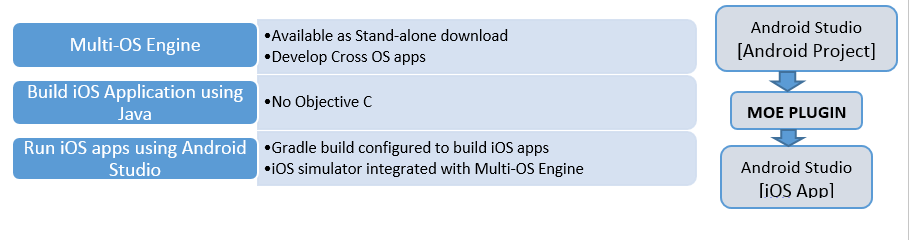
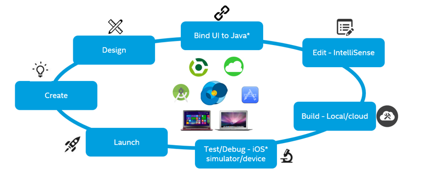

Introduction¶
Intel’s Multi-OS Engine Technology Preview lets you use Java* capabilities to develop native mobile applications for Apple iOS* and Android* devices providing the native look, feel and performance. This technology provides a stand-alone plug-in that integrates into Android Studio* on Windows* and/or Apple macOS development machines.
An application starts as an Android project in Android Studio. The Multi-OS Engine configures the project to build and run as an iOS app on the iOS simulator that you can invoke from Android Studio or on a real device.
The key features of Multi-OS Engine are:
Java support on iOS devices.
Developing iOS apps in Java instead of Apple Objective-C*.
Direct access to platform-specific UI components for either of the supported platforms.
Native multithreading support.
Debugging apps on real devices or the iOS simulator integrated with Android Studio.
Running/deploying apps from Apple App Store*.
To get started, follow the instructions in the Getting Started section.
Multi-OS Engine Architecture Overview¶
Multi-OS Engine Runtime is based on the modern Android ART*, which is the runtime component of Android that runs Java apps.
ART has a list of features that provide optimal performance for apps on iOS devices:
Ahead-of-time (AOT) compilation, which can improve app performance.
Use of the same Java runtime libraries as Android, which simplify cross-platform app development.
Enhanced memory management and garbage collection.
A compiled Multi-OS Engine app contains the following components:
Compiled Java sources.
Resources.
Standard (iOS) library bindings.
Third party native libraries and bindings.
Nat/J native library for the Java to native binding that enables the implementation of native classes and functions in pure Java and makes them available to the native side.
The specialized ART virtual machine (VM) with Multi-OS Engine ART enhancements.
When an iOS app launches, it starts the ART VM and executes the pre-compiled code on it.
iOS* Development Workflow with the Multi-OS Engine¶
Create an Android project in Android Studio. To configure your iOS app, add a new configuration Multi-OS Engine Project. Other steps below explain only the creation of iOS* App with Multi-OS Engine, and assume you are aware of the build process of an Android app in Android Studio.
Design a User Interface (UI) for iOS in Apple Xcode*.
Bind UI to Java* using the NatJ runtime libraries.
Android Studio is equipped with the Intellisense capabilities to bind the action handlers to the UI elements for iOS.
A local build is supported on macOS development machines where iOS Simulators can be invoked. For Windows* development systems, cloud build is supported.
iOS applications can be run on the Simulator integrated into Android Studio by the Multi-OS Engine configuration or directly on the device itself using USB debugging.
Launch your app by publishing and downloading it from the Apple App Store* for iOS* devices or the Google Play Store* for Android devices.
Reiterate the process. Your goal is to reuse as much code as possible between these two apps.